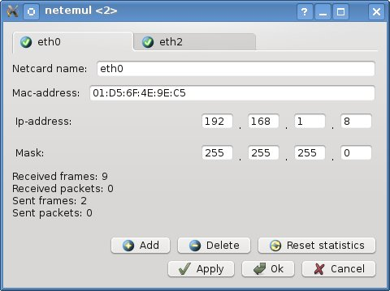

| Manual NetEmul | ||
|---|---|---|
| Prev. | Next | |
IP-addr — The unique identifier (address) of the device (usually the computer), connected to a local area network
and (or) to the Internet.
IP-addr Represents 32-bit (under version IPv4) or 128-bit (under version IPv6) binary number.
In terminology of networks TCP/IP the bit pattern defining is named as a mask of a subnet or a network mask, what part
of ip-address of a net point concerns the network address, and what — to the address of the site in this network. For example,
the site with ip-address 12.34.56.78 and a mask of a subnet 255.255.255.0 is in a network 12.34.56.0/24.
ARP (Address Resolution Protocol) — The network protocol of data link level intended for conversion of ip-addresses (network layer addresses) in MAC-addresses (the address of data link level) in networks TCP/IP.

At IP-address input, the mask depending on a network class is automatically substituted. After pressing button "Ок" (or to "Apply") it is possible to see at once operation of the Arp-report which checks, whether there is in a network a computer with such ip-address.| Prev. | Main | Next |
| Mac-addr | On level above | User manual |